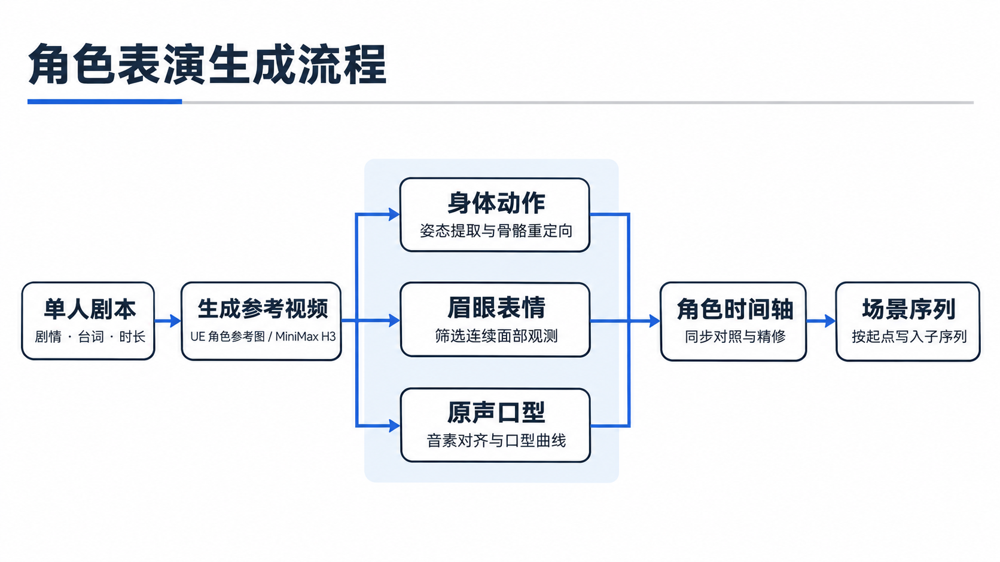

数字人表演生成
用一条参考视频，把身体动作、对白口型和可用的眉眼表情对到同一个时间轴。最终写入 Unreal Engine 的角色表演序列，放进场景里检查。
 放大查看 ↗
放大查看 ↗先让参考视频覆盖整段戏
先在单人剧本里定下台词、情绪和时长，再生成一条固定构图的全身表演作为参考。身体动作和对白来自同一条视频，后面就能沿用相同的时间点检查动作与台词。

放大查看 ↗把动作和对白放进 UE 场景
从参考画面提取人体姿态，再重定向到 UE 角色骨架。从原声对齐音素，生成口型轨。表情曲线需要连续、可用的眉眼画面，这次全身参考提供的面部信息有限，演示主要呈现了身体动作和口型。
各条轨道在角色时间轴里对齐后，把子序列写入目标场景的 Sequence。播放时可以检查捂胸、弯腰与台词是否同拍。